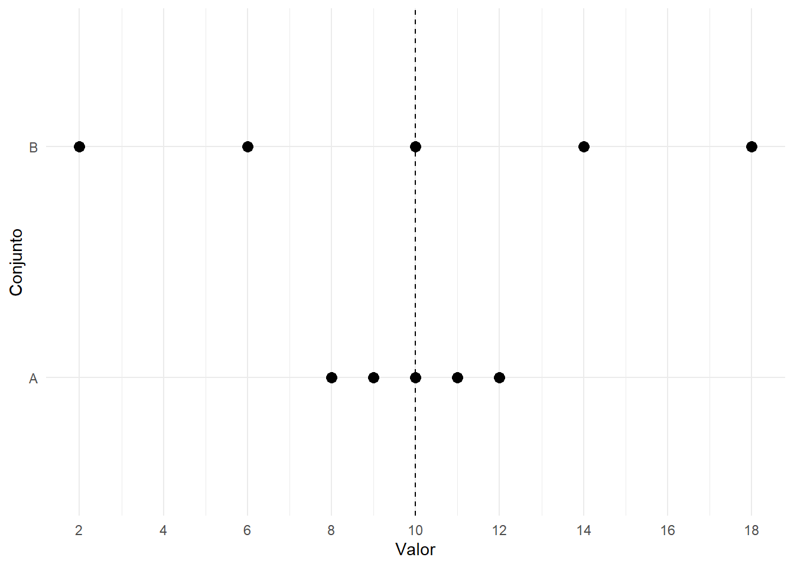

7 Medidas de dispersão
No capítulo anterior, estudamos medidas de posição e vimos como quartis, percentis, amplitude interquartílica e boxplots ajudam a localizar as observações ao longo de uma distribuição. Neste capítulo, avançaremos para outra pergunta fundamental da Análise Exploratória de Dados:
Quanto os valores variam entre si?
Duas distribuições podem apresentar a mesma média e, ainda assim, serem muito diferentes quanto à sua dispersão. Por isso, uma análise estatística não deve descrever apenas o centro dos dados; é necessário também avaliar o grau de variabilidade das observações.
Neste capítulo, estudaremos a amplitude total, a amplitude interquartílica, o desvio médio, a variância, o desvio padrão, o coeficiente de variação e o desvio absoluto mediano. Também discutiremos quais medidas são mais sensíveis a valores extremos, quais são mais resistentes e como escolher uma medida de dispersão adequada ao contexto.
Ao final deste capítulo, você deverá ser capaz de calcular e interpretar medidas de dispersão para populações e amostras, comparar a variabilidade entre conjuntos de dados, avaliar a influência de valores extremos e utilizar o R para realizar essas análises de forma reprodutível.
7.1 Por que medir a dispersão?
Considere os dois conjuntos:
\[A=(8,\ 9,\ 10,\ 11,\ 12)\]
e
\[B=(2,\ 6,\ 10,\ 14,\ 18).\]
Em ambos os casos,
\[\bar{x}=10.\]
Entretanto, os valores do conjunto \(A\) estão próximos de 10, enquanto os valores do conjunto \(B\) estão muito mais espalhados.
A Tabela 7.1 apresenta essa comparação.
| Conjunto | Valores | Média |
|---|---|---|
| A | 8, 9, 10, 11, 12 | 10 |
| B | 2, 6, 10, 14, 18 | 10 |
Como mostra a Tabela 7.1, conhecer apenas a média não é suficiente para descrever completamente os dados.
A Figura 7.1 torna essa diferença visualmente evidente.
Na Figura 7.1, a linha tracejada indica a média comum aos dois conjuntos. Embora o centro seja o mesmo, o conjunto \(B\) ocupa uma faixa muito maior de valores.
Chamamos de dispersão ou variabilidade o grau de afastamento ou espalhamento das observações em uma distribuição.
Centro e dispersão devem ser analisados em conjunto
Uma medida de tendência central indica onde a distribuição se concentra. Uma medida de dispersão indica o quanto as observações se afastam umas das outras ou de uma referência central.
Uma descrição estatística adequada costuma considerar as duas dimensões.
Laboratório no R — mesma média, dispersões diferentes
Vamos reproduzir o exemplo no R.
Código
conjunto_a <- c(8, 9, 10, 11, 12)
conjunto_b <- c(2, 6, 10, 14, 18)
mean(conjunto_a)[1] 10Código
mean(conjunto_b)[1] 10As médias são iguais. Agora observe a amplitude total:
Código
diff(range(conjunto_a))[1] 4Código
diff(range(conjunto_b))[1] 16E compare os desvios padrão amostrais:
Código
sd(conjunto_a)[1] 1.581139Código
sd(conjunto_b)[1] 6.324555Mesmo com a mesma média, o conjunto \(B\) apresenta maior amplitude e maior desvio padrão.
Também podemos visualizar os dois conjuntos:
Código
tibble(
valor = c(conjunto_a, conjunto_b),
conjunto = rep(c("A", "B"), each = 5)
) |>
ggplot(
aes(x = valor, y = conjunto)
) +
geom_point(size = 3) +
geom_vline(
xintercept = 10,
linetype = "dashed"
) +
scale_x_continuous(
breaks = seq(2, 18, by = 2)
) +
labs(
x = "Valor",
y = "Conjunto"
) +
theme_minimal()
A Figura 7.2 confirma visualmente que a igualdade das médias não implica igualdade da variabilidade.
7.2 Notação para população e amostra
Antes de estudar cada medida, é importante distinguir a notação utilizada para população e amostra.
A Tabela 7.2 resume os símbolos que aparecerão ao longo do capítulo.
| Quantidade | População | Amostra |
|---|---|---|
| Número de observações | \(N\) | \(n\) |
| Média | \(\mu\) | \(\bar{x}\) |
| Variância | \(\sigma^2\) | \(s^2\) |
| Desvio padrão | \(\sigma\) | \(s\) |
| Mediana | \(\eta\) | \(\widetilde{x}\) |
Como mostra a Tabela 7.2, utilizaremos letras gregas principalmente para parâmetros populacionais e símbolos latinos para estatísticas amostrais.
Descrição dos dados e inferência são ideias diferentes
Quando possuímos todos os elementos de interesse, podemos calcular diretamente medidas populacionais. Quando observamos apenas uma amostra e desejamos estimar características da população, algumas fórmulas amostrais apresentam ajustes específicos, como ocorre com a variância e o desvio padrão.
A Tabela 7.3 apresenta, de forma resumida, as expressões que serão desenvolvidas nas próximas seções.
| Medida | População | Amostra |
|---|---|---|
| Amplitude total | \(x_{\max}-x_{\min}\) | \(x_{(n)}-x_{(1)}\) |
| Amplitude interquartílica | \(Q_3-Q_1\) | \(Q_3-Q_1\) |
| Desvio médio | \(\displaystyle \frac{1}{N}\sum_{i=1}^{N}|x_i-\mu|\) | \(\displaystyle \frac{1}{n}\sum_{i=1}^{n}|x_i-\bar{x}|\) |
| Variância | \(\displaystyle \sigma^2=\frac{1}{N}\sum_{i=1}^{N}(x_i-\mu)^2\) | \(\displaystyle s^2=\frac{1}{n-1}\sum_{i=1}^{n}(x_i-\bar{x})^2\) |
| Desvio padrão | \(\sigma=\sqrt{\sigma^2}\) | \(s=\sqrt{s^2}\) |
| Coeficiente de variação | \(\displaystyle CV=\frac{\sigma}{\mu}\times100\%\) | \(\displaystyle CV=\frac{s}{\bar{x}}\times100\%\) |
| Desvio absoluto mediano | \(\operatorname{Med}(|X-\eta|)\) | \(\operatorname{mediana}(|x_i-\widetilde{x}|)\) |
Como mostra a Tabela 7.3, a diferença mais marcante entre as expressões populacionais e amostrais ocorre na variância e, consequentemente, no desvio padrão. Nas próximas seções, cada medida será construída e interpretada separadamente.
7.3 Amplitude total
A medida de dispersão mais simples é a amplitude total, definida como a diferença entre o maior e o menor valor observado.
Para uma população,
\[A=x_{\max}-x_{\min},\]
e, para uma amostra,
\[A=x_{(n)}-x_{(1)}.\]
A expressão é essencialmente a mesma nos dois casos: subtrair o menor valor do maior.
Para o conjunto
\[2,\ 4,\ 6,\ 8,\ 10,\]
temos
\[A=10-2=8.\]
Portanto, os dados ocupam uma faixa total de 8 unidades.
7.3.1 Propriedades da amplitude total
A amplitude total possui algumas propriedades simples:
- \(A\geq 0\);
- \(A=0\) somente quando todos os valores são iguais;
- adicionar uma constante a todos os valores não altera a amplitude;
- multiplicar todos os valores por uma constante \(b\) multiplica a amplitude por \(|b|\);
- depende exclusivamente do menor e do maior valor;
- é, portanto, muito sensível a valores extremos.
Se
\[y_i=a+bx_i,\]
então
\[A_y=|b|A_x.\]
No conjunto
\[10,\ 11,\ 12,\ 13,\ 14,\]
a amplitude é
\[14-10=4.\]
Se substituirmos 14 por 50,
\[10,\ 11,\ 12,\ 13,\ 50,\]
a amplitude passa a ser
\[50-10=40.\]
A alteração de uma única observação fez a amplitude aumentar de 4 para 40.
Laboratório no R — amplitude total
No R, podemos calcular a amplitude combinando range() e diff().
Código
x <- c(2, 4, 6, 8, 10)
range(x)[1] 2 10A função range() retorna o menor e o maior valor.
Para obter a amplitude total:
Código
diff(range(x))[1] 8Aplicando ao tempo de deslocamento dos estudantes:
Código
range(
dados$tempo_deslocamento_min,
na.rm = TRUE
)[1] 11.7 112.0Código
diff(
range(
dados$tempo_deslocamento_min,
na.rm = TRUE
)
)[1] 100.3Agora compare a influência de um valor extremo:
Código
x_sem_extremo <- c(10, 11, 12, 13, 14)
x_com_extremo <- c(10, 11, 12, 13, 50)
diff(range(x_sem_extremo))[1] 4Código
diff(range(x_com_extremo))[1] 40A amplitude reage fortemente à presença do valor 50 porque utiliza diretamente os dois extremos do conjunto.
7.4 Amplitude interquartílica
A amplitude interquartílica, estudada no capítulo anterior, também é uma medida de dispersão.
Ela é definida por
\[AIQ=Q_3-Q_1.\]
A mesma expressão é utilizada para dados populacionais e amostrais; o que pode variar é o procedimento adotado para determinar os quartis.
A AIQ mede a extensão ocupada pelos 50% centrais da distribuição.
Para o conjunto
\[2,\ 4,\ 6,\ 8,\ 10,\]
utilizando a convenção de quantis adotada anteriormente,
\[Q_1=4\]
e
\[Q_3=8.\]
Logo,
\[AIQ=8-4=4.\]
7.4.1 Propriedades da amplitude interquartílica
A AIQ apresenta propriedades semelhantes às da amplitude total:
- \(AIQ\geq0\);
- adicionar uma constante a todas as observações não altera a AIQ;
- multiplicar todos os valores por \(b\) multiplica a AIQ por \(|b|\);
- é expressa na mesma unidade dos dados;
- utiliza os quartis e, por isso, é mais resistente a valores extremos do que a amplitude total.
Se
\[y_i=a+bx_i,\]
então
\[AIQ_y=|b|AIQ_x.\]
Retomando os conjuntos
\[10,\ 11,\ 12,\ 13,\ 14\]
e
\[10,\ 11,\ 12,\ 13,\ 50,\]
temos, nos dois casos,
\[Q_1=11\]
e
\[Q_3=13.\]
Portanto,
\[AIQ=2.\]
Embora a amplitude total tenha aumentado de 4 para 40, a AIQ permaneceu igual a 2.
Laboratório no R — amplitude interquartílica
A função IQR() calcula diretamente a amplitude interquartílica.
Código
IQR(x)[1] 4Também podemos reproduzir o cálculo:
Código
q1 <- quantile(x, 0.25)
q3 <- quantile(x, 0.75)
q3 - q175%
4 Para o tempo de deslocamento:
Código
IQR(
dados$tempo_deslocamento_min,
na.rm = TRUE
)[1] 27.1Compare novamente os conjuntos com e sem valor extremo:
Código
IQR(x_sem_extremo)[1] 2Código
IQR(x_com_extremo)[1] 2Nesse exemplo, a AIQ permanece inalterada, enquanto a amplitude total muda drasticamente.
7.5 Desvio médio absoluto em relação à média
A amplitude total e a AIQ medem distâncias entre pontos específicos da distribuição. Outra possibilidade é considerar o afastamento de cada observação em relação a um centro.
O desvio médio absoluto em relação à média, que neste capítulo chamaremos simplesmente de desvio médio, utiliza as distâncias absolutas entre cada observação e a média.
7.5.1 Fórmula populacional
Para uma população com \(N\) elementos e média \(\mu\),
\[DM= \frac{1}{N} \sum_{i=1}^{N} |x_i-\mu|.\]
7.5.2 Fórmula amostral
Para uma amostra com \(n\) observações e média \(\bar{x}\),
\[dm= \frac{1}{n} \sum_{i=1}^{n} |x_i-\bar{x}|.\]
Observe que, no uso descritivo, o divisor é \(n\). O ajuste para \(n-1\) utilizado na variância amostral não é aplicado automaticamente ao desvio médio absoluto.
7.5.3 Exemplo
Considere novamente
\[2,\ 4,\ 6,\ 8,\ 10.\]
A média é
\[\bar{x}=6.\]
A Tabela 7.4 apresenta os desvios e seus valores absolutos.
| \(x_i\) | \(x_i-\bar{x}\) | \(|x_i-\bar{x}|\) |
|---|---|---|
| 2 | -4 | 4 |
| 4 | -2 | 2 |
| 6 | 0 | 0 |
| 8 | 2 | 2 |
| 10 | 4 | 4 |
| Total | 0 | 12 |
Como mostra a Tabela 7.4, os desvios com sinal somam zero. Para evitar esse cancelamento, o desvio médio utiliza os valores absolutos:
\[dm= \frac{4+2+0+2+4}{5} = \frac{12}{5} = 2,4.\]
Portanto, o afastamento absoluto médio em relação à média é de 2,4 unidades.
7.5.4 Propriedades do desvio médio
O desvio médio:
- é sempre não negativo;
- vale zero somente quando todas as observações são iguais;
- é expresso na mesma unidade da variável;
- não se altera quando adicionamos uma mesma constante a todos os valores;
- é multiplicado por \(|b|\) quando todos os valores são multiplicados por \(b\);
- utiliza todas as observações;
- pode ser influenciado por valores extremos, embora o uso de distâncias absolutas evite o efeito de elevar os desvios ao quadrado.
Se
\[y_i=a+bx_i,\]
então
\[dm_y=|b|dm_x.\]
Laboratório no R — desvio médio
Não existe, na base do R, uma função chamada mean_deviation() para esse cálculo. Entretanto, a expressão pode ser escrita diretamente.
Código
x <- c(2, 4, 6, 8, 10)
mean(x)[1] 6Agora calculamos os desvios absolutos:
Código
abs(x - mean(x))[1] 4 2 0 2 4E sua média:
Código
mean(
abs(
x - mean(x)
)
)[1] 2.4Para o tempo de deslocamento:
Código
mean(
abs(
dados$tempo_deslocamento_min -
mean(
dados$tempo_deslocamento_min,
na.rm = TRUE
)
),
na.rm = TRUE
)[1] 17.011Podemos guardar esse procedimento em uma função simples:
Código
desvio_medio <- function(x, na.rm = FALSE) {
media <- mean(x, na.rm = na.rm)
mean(
abs(x - media),
na.rm = na.rm
)
}
desvio_medio(
dados$tempo_deslocamento_min,
na.rm = TRUE
)[1] 17.011A função criada reproduz exatamente a definição estudada na teoria.
7.6 Variância
A variância é uma das medidas de dispersão mais importantes da Estatística.
Ela considera os desvios em relação à média, mas, em vez de utilizar valores absolutos, eleva esses desvios ao quadrado.
7.6.1 Variância populacional
Para uma população de tamanho \(N\) e média \(\mu\), a variância populacional é
\[\sigma^2= \frac{1}{N} \sum_{i=1}^{N} (x_i-\mu)^2.\]
7.6.2 Variância amostral
Para uma amostra de tamanho \(n\) e média \(\bar{x}\), a variância amostral é
\[s^2= \frac{1}{n-1} \sum_{i=1}^{n} (x_i-\bar{x})^2.\]
A diferença entre as fórmulas está no divisor:
- na variância populacional, utilizamos \(N\);
- na variância amostral, utilizamos \(n-1\).
Por que aparece n - 1?
Quando a média populacional \(\mu\) é desconhecida e utilizamos a média amostral \(\bar{x}\) calculada com os próprios dados, os desvios
\[x_i-\bar{x}\]
satisfazem
\[\sum_{i=1}^{n}(x_i-\bar{x})=0.\]
Isso significa que, conhecidos \(n-1\) desvios, o último fica determinado. Dizemos que existem \(n-1\) graus de liberdade para esses desvios.
Além disso, sob amostragem aleatória nas condições usuais, dividir a soma dos quadrados por \(n-1\) produz um estimador não viesado da variância populacional \(\sigma^2\).
7.6.3 Exemplo
Considere
\[2,\ 4,\ 6,\ 8,\ 10,\]
cuja média é
\[\bar{x}=6.\]
A Tabela 7.5 apresenta os desvios e seus quadrados.
| \(x_i\) | \(x_i-\bar{x}\) | \((x_i-\bar{x})^2\) |
|---|---|---|
| 2 | -4 | 16 |
| 4 | -2 | 4 |
| 6 | 0 | 0 |
| 8 | 2 | 4 |
| 10 | 4 | 16 |
| Total | 0 | 40 |
Se os cinco valores representarem toda a população, então
\[\sigma^2= \frac{40}{5} = 8.\]
Se os cinco valores constituírem uma amostra de uma população maior, então
\[s^2= \frac{40}{5-1} = 10.\]
A Tabela 7.6 compara os resultados.
| Situação | Soma dos quadrados | Divisor | Variância |
|---|---|---|---|
| População | 40 | 5 | 8 |
| Amostra | 40 | 4 | 10 |
A Tabela 7.6 mostra que os mesmos valores podem produzir variâncias numericamente diferentes dependendo do papel que exercem na análise.
7.6.4 Propriedades da variância
A variância possui propriedades fundamentais.
Não negatividade
Como os desvios são elevados ao quadrado,
\[\sigma^2\geq0\]
e
\[s^2\geq0.\]
A variância é igual a zero somente quando todos os valores são iguais.
Invariância à translação
Adicionar uma constante \(a\) a todas as observações não altera a variância.
Se
\[Y=X+a,\]
então
\[Var(Y)=Var(X).\]
Em termos amostrais,
\[s_Y^2=s_X^2.\]
Efeito da multiplicação por uma constante
Se
\[Y=bX,\]
então
\[Var(Y)=b^2Var(X).\]
Portanto,
\[s_Y^2=b^2s_X^2.\]
De forma mais geral, se
\[Y=a+bX,\]
então
\[Var(Y)=b^2Var(X).\]
A constante adicionada não altera a variabilidade; a multiplicação por \(b\) altera a variância por um fator \(b^2\).
Unidade ao quadrado
Se a variável é medida em minutos, a variância é expressa em
\[\text{minutos}^2.\]
Se a variável é medida em metros, a variância é expressa em
\[\text{metros}^2.\]
Essa característica é matematicamente útil, mas torna a interpretação direta da variância menos intuitiva.
Forma computacional
Para uma população,
\[\sigma^2= \frac{\sum_{i=1}^{N}x_i^2}{N} -\mu^2.\]
Para uma amostra,
\[s^2= \frac{ \sum_{i=1}^{n}x_i^2-n\bar{x}^2 }{ n-1 }.\]
Essas expressões são algebraicamente equivalentes às fórmulas baseadas nos desvios em relação à média.
A variância é sensível a valores extremos
Como os desvios são elevados ao quadrado, observações muito afastadas da média recebem peso elevado no cálculo da variância. Essa propriedade pode ser útil em alguns métodos estatísticos, mas também torna a variância sensível a valores extremos.
Laboratório no R — variância populacional e amostral
A função var() do R calcula a variância amostral, utilizando o divisor \(n-1\).
Código
x <- c(2, 4, 6, 8, 10)
var(x)[1] 10O resultado é 10, exatamente como obtivemos pela fórmula amostral.
Podemos reproduzir o cálculo:
Código
sum(
(x - mean(x))^2
) / (length(x) - 1)[1] 10Se os valores constituírem a população completa e quisermos calcular a variância populacional, podemos utilizar:
Código
mean(
(x - mean(x))^2
)[1] 8Ou:
Código
sum(
(x - mean(x))^2
) / length(x)[1] 8Assim:
Código
variancia_amostral <- var(x)
variancia_populacional <- mean(
(x - mean(x))^2
)
variancia_amostral[1] 10Código
variancia_populacional[1] 8Para o tempo de deslocamento dos estudantes, tratando os 80 estudantes como uma amostra:
Código
var(
dados$tempo_deslocamento_min,
na.rm = TRUE
)[1] 465.2427Se, em outro contexto, esses 80 estudantes constituíssem toda a população de interesse, a variância populacional seria calculada por:
Código
x_tempo <- dados$tempo_deslocamento_min
x_tempo <- x_tempo[!is.na(x_tempo)]
mean(
(x_tempo - mean(x_tempo))^2
)[1] 459.4271A distinção não depende do tamanho absoluto do banco, mas de como os dados se relacionam com a população sobre a qual desejamos falar.
7.7 Desvio padrão
A variância tem uma limitação interpretativa: sua unidade está elevada ao quadrado.
O desvio padrão resolve essa dificuldade tomando a raiz quadrada da variância.
7.7.1 Desvio padrão populacional
\[\sigma= \sqrt{ \frac{1}{N} \sum_{i=1}^{N} (x_i-\mu)^2 }.\]
7.7.2 Desvio padrão amostral
\[s= \sqrt{ \frac{1}{n-1} \sum_{i=1}^{n} (x_i-\bar{x})^2 }.\]
No exemplo anterior, se os dados forem uma população,
\[\sigma=\sqrt{8}\approx2,83.\]
Se forem uma amostra,
\[s=\sqrt{10}\approx3,16.\]
A vantagem interpretativa é que o desvio padrão é expresso na mesma unidade dos dados.
Se estamos analisando minutos, o desvio padrão é dado em minutos; se estamos analisando metros, ele é dado em metros.
7.7.3 Propriedades do desvio padrão
O desvio padrão:
- é sempre não negativo;
- é zero somente quando todos os valores são iguais;
- possui a mesma unidade da variável;
- não se altera quando adicionamos uma constante a todos os valores;
- é multiplicado por \(|b|\) quando os dados são multiplicados por \(b\);
- utiliza todas as observações;
- é sensível a valores extremos.
Se
\[Y=a+bX,\]
então
\[SD(Y)=|b|SD(X).\]
7.7.4 Interpretação
Um desvio padrão pequeno indica que, em geral, os valores estão relativamente próximos da média. Um desvio padrão maior indica maior espalhamento em torno da média.
Entretanto, o desvio padrão não é uma distância máxima, nem significa que todas as observações estejam exatamente a um desvio padrão da média.
Sua interpretação deve considerar a forma da distribuição, a unidade da variável e o contexto.
Laboratório no R — desvio padrão
A função sd() calcula o desvio padrão amostral.
Código
x <- c(2, 4, 6, 8, 10)
sd(x)[1] 3.162278Podemos verificar a relação
\[s=\sqrt{s^2}\]
com:
Código
sqrt(var(x))[1] 3.162278Para obter o desvio padrão populacional:
Código
sqrt(
mean(
(x - mean(x))^2
)
)[1] 2.828427Aplicando ao tempo de deslocamento:
Código
sd(
dados$tempo_deslocamento_min,
na.rm = TRUE
)[1] 21.56948Podemos comparar os conjuntos \(A\) e \(B\):
Código
sd(conjunto_a)[1] 1.581139Código
sd(conjunto_b)[1] 6.324555O conjunto \(B\) possui maior desvio padrão, confirmando a maior dispersão visual observada anteriormente.
7.8 Coeficiente de variação
O desvio padrão é uma medida absoluta de dispersão. Quando desejamos expressar a variabilidade em relação ao tamanho da média, podemos utilizar o coeficiente de variação.
7.8.1 Coeficiente de variação populacional
Quando \(\mu>0\),
\[CV= \frac{\sigma}{\mu}\times100\%.\]
7.8.2 Coeficiente de variação amostral
Quando \(\bar{x}>0\),
\[CV= \frac{s}{\bar{x}}\times100\%.\]
O coeficiente de variação é uma medida adimensional: a unidade do numerador é cancelada pela unidade do denominador.
7.8.3 Exemplo
Considere duas variáveis hipotéticas:
| Variável | Média | Desvio padrão | CV |
|---|---|---|---|
| A | 100 | 10 | 10% |
| B | 20 | 5 | 25% |
Na Tabela 7.7, a variável A apresenta maior desvio padrão absoluto, pois \(10>5\). Entretanto, relativamente à própria média, a variável B apresenta maior variabilidade, pois seu CV é 25%, contra 10% da variável A.
7.8.4 Propriedades e cuidados no uso do CV
O coeficiente de variação:
- é independente da unidade de medida quando a mudança de unidade corresponde apenas a uma multiplicação;
- permite comparar dispersões relativas de variáveis em escalas diferentes, quando essa comparação é substantivamente válida;
- não se altera quando todos os valores são multiplicados por uma constante positiva;
- não é invariável à adição de uma constante;
- torna-se instável quando a média está muito próxima de zero;
- não deve ser interpretado mecanicamente quando a média é zero ou negativa;
- é mais apropriado para variáveis em escala de razão, isto é, quando o zero possui significado substantivo.
Cuidado com o coeficiente de variação
Não é adequado utilizar o CV indiscriminadamente.
Por exemplo, comparar variabilidade de temperaturas em graus Celsius por CV pode ser problemático, pois o zero dessa escala é arbitrário. Além disso, quando a média se aproxima de zero, pequenas alterações na média podem produzir valores de CV extremamente grandes.
Laboratório no R — coeficiente de variação
O R não possui, na base, uma função única chamada cv() para esse cálculo. Podemos escrevê-lo diretamente.
Código
x <- c(2, 4, 6, 8, 10)
100 * sd(x) / mean(x)[1] 52.70463Para o tempo de deslocamento:
Código
100 *
sd(
dados$tempo_deslocamento_min,
na.rm = TRUE
) /
mean(
dados$tempo_deslocamento_min,
na.rm = TRUE
)[1] 52.91664Podemos criar uma função:
Código
coef_variacao <- function(x, na.rm = FALSE) {
100 *
sd(x, na.rm = na.rm) /
mean(x, na.rm = na.rm)
}
coef_variacao(
dados$tempo_deslocamento_min,
na.rm = TRUE
)[1] 52.91664Agora compare a variabilidade relativa do tempo de deslocamento entre os meios de transporte:
Código
comparacao_transporte <- dados |>
group_by(meio_transporte) |>
summarise(
n = n(),
media = mean(
tempo_deslocamento_min,
na.rm = TRUE
),
desvio_padrao = sd(
tempo_deslocamento_min,
na.rm = TRUE
),
cv = 100 *
desvio_padrao /
media,
.groups = "drop"
) |>
arrange(cv)
comparacao_transporte# A tibble: 6 × 5
meio_transporte n media desvio_padrao cv
<chr> <int> <dbl> <dbl> <dbl>
1 Bicicleta 5 22.8 6.58 28.8
2 Carro 15 31.3 9.87 31.6
3 Aplicativo 14 36.9 12.6 34.2
4 Motocicleta 9 27.5 9.90 36.0
5 Ônibus 30 59.1 22.0 37.2
6 A pé 7 19.9 7.80 39.2Nesse caso, o CV acrescenta uma perspectiva relativa à comparação. Um grupo pode ter desvio padrão menor, mas CV relativamente elevado porque sua média também é menor.
7.9 Desvio absoluto mediano
Até agora, várias medidas estudadas utilizam diretamente valores extremos ou a média. Existe, porém, uma medida de dispersão construída a partir da mediana, que é resistente a observações extremas.
Ela é chamada de desvio absoluto mediano, abreviado neste capítulo por DAM.
7.9.1 Definição populacional
Se \(\eta\) representa a mediana populacional, então
\[DAM= \operatorname{Med} \left( |X-\eta| \right).\]
Em uma população finita, calculamos a mediana das distâncias absolutas entre cada valor e a mediana populacional.
7.9.2 Definição amostral
Se \(\widetilde{x}\) representa a mediana da amostra,
\[DAM= \operatorname{mediana} \left( |x_i-\widetilde{x}| \right).\]
7.9.3 Exemplo
Considere novamente
\[2,\ 4,\ 6,\ 8,\ 10.\]
A mediana é
\[\widetilde{x}=6.\]
Os desvios absolutos em relação à mediana são
\[4,\ 2,\ 0,\ 2,\ 4.\]
Em ordem crescente,
\[0,\ 2,\ 2,\ 4,\ 4.\]
A mediana desses desvios é
\[DAM=2.\]
A Tabela 7.8 apresenta uma comparação entre duas medidas baseadas em distâncias absolutas.
| Medida | Centro utilizado | Operação final | Resultado |
|---|---|---|---|
| Desvio médio | média | média dos desvios absolutos | 2,4 |
| Desvio absoluto mediano | mediana | mediana dos desvios absolutos | 2,0 |
A Tabela 7.8 mostra que as duas medidas utilizam desvios absolutos, mas diferem tanto no centro de referência quanto na operação utilizada para resumir as distâncias.
7.9.4 Propriedades do DAM
O desvio absoluto mediano:
- é não negativo;
- é expresso na mesma unidade dos dados;
- não se altera quando adicionamos uma mesma constante a todas as observações;
- é multiplicado por \(|b|\) quando os dados são multiplicados por \(b\);
- utiliza a mediana como centro;
- é resistente a valores extremos.
Se
\[Y=a+bX,\]
então
\[DAM_Y=|b|DAM_X.\]
Laboratório no R — desvio absoluto mediano
Podemos calcular diretamente a definição:
Código
x <- c(2, 4, 6, 8, 10)
mediana_x <- median(x)
abs(x - mediana_x)[1] 4 2 0 2 4Agora tomamos a mediana dessas distâncias:
Código
median(
abs(
x - median(x)
)
)[1] 2O R possui também a função mad():
Código
mad(
x,
constant = 1
)[1] 2Utilizamos constant = 1 porque queremos reproduzir exatamente o desvio absoluto mediano definido na teoria.
A função mad() do R possui uma particularidade
Por padrão, mad() utiliza um fator de escala aproximadamente igual a 1,4826:
Código
mad(x)[1] 2.9652Esse fator é utilizado para produzir uma medida comparável ao desvio padrão em determinadas condições, especialmente sob normalidade.
Assim, para obter o DAM não escalonado estudado neste capítulo, utilizaremos:
mad(x, constant = 1)Aplicando ao tempo de deslocamento:
Código
mad(
dados$tempo_deslocamento_min,
constant = 1,
na.rm = TRUE
)[1] 13.95Podemos confirmar pela definição:
Código
median(
abs(
dados$tempo_deslocamento_min -
median(
dados$tempo_deslocamento_min,
na.rm = TRUE
)
),
na.rm = TRUE
)[1] 13.95Os resultados coincidem.
7.10 Comparando as medidas de dispersão
As medidas estudadas não respondem exatamente à mesma pergunta.
A Tabela 7.9 resume suas principais características.
| Medida | Ideia principal | Unidade | Usa todos os valores? | Sensibilidade a extremos |
|---|---|---|---|---|
| Amplitude total | distância entre máximo e mínimo | mesma dos dados | não | muito alta |
| AIQ | extensão dos 50% centrais | mesma dos dados | não diretamente | baixa |
| Desvio médio | média das distâncias absolutas à média | mesma dos dados | sim | moderada/alta |
| Variância | média ou média ajustada dos desvios quadráticos | unidade ao quadrado | sim | alta |
| Desvio padrão | raiz da variância | mesma dos dados | sim | alta |
| CV | desvio padrão relativo à média | percentual | sim | alta |
| DAM | mediana das distâncias à mediana | mesma dos dados | não da mesma forma | baixa |
A Tabela 7.9 mostra que não existe uma única medida universalmente superior. A escolha depende da forma da distribuição, da presença de valores extremos, da escala de medição e do objetivo da análise.
7.10.1 Medidas sensíveis e medidas resistentes
Uma medida é considerada sensível quando uma pequena quantidade de observações extremas pode provocar grande alteração em seu valor.
Uma medida é resistente quando alterações em poucos valores extremos produzem efeito relativamente pequeno.
Entre as medidas estudadas:
- amplitude total, variância e desvio padrão são sensíveis;
- o coeficiente de variação também é sensível, pois depende da média e do desvio padrão;
- AIQ e DAM são medidas resistentes;
- o desvio médio ocupa uma posição intermediária, mas ainda pode ser afetado por extremos porque utiliza a média como centro.
7.10.2 Exemplo: influência de um valor extremo
Compare os conjuntos:
\[A=(10,\ 11,\ 12,\ 13,\ 14)\]
e
\[B=(10,\ 11,\ 12,\ 13,\ 50).\]
A Tabela 7.10 apresenta algumas medidas.
| Medida | Sem valor extremo | Com valor extremo |
|---|---|---|
| Amplitude total | 4,00 | 40,00 |
| AIQ | 2,00 | 2,00 |
| Desvio médio | 1,20 | 12,32 |
| Variância amostral | 2,50 | 297,70 |
| Desvio padrão amostral | 1,58 | 17,25 |
| DAM | 1,00 | 1,00 |
Como mostra a Tabela 7.10, amplitude, desvio médio, variância e desvio padrão aumentam fortemente após a substituição de 14 por 50. A AIQ e o DAM permanecem iguais nesse exemplo.
Laboratório no R — influência de valores extremos
Vamos reproduzir a comparação.
Código
x_sem_extremo <- c(10, 11, 12, 13, 14)
x_com_extremo <- c(10, 11, 12, 13, 50)Primeiro, a amplitude total:
Código
diff(range(x_sem_extremo))[1] 4Código
diff(range(x_com_extremo))[1] 40Agora a AIQ:
Código
IQR(x_sem_extremo)[1] 2Código
IQR(x_com_extremo)[1] 2O desvio padrão:
Código
sd(x_sem_extremo)[1] 1.581139Código
sd(x_com_extremo)[1] 17.25399E o DAM:
Código
mad(
x_sem_extremo,
constant = 1
)[1] 1Código
mad(
x_com_extremo,
constant = 1
)[1] 1Podemos reunir todas as medidas.
Código
medidas_dispersao <- function(x) {
tibble(
amplitude = diff(range(x)),
AIQ = IQR(x),
desvio_medio = mean(
abs(x - mean(x))
),
variancia = var(x),
desvio_padrao = sd(x),
DAM = mad(
x,
constant = 1
)
)
}
medidas_dispersao(x_sem_extremo)# A tibble: 1 × 6
amplitude AIQ desvio_medio variancia desvio_padrao DAM
<dbl> <dbl> <dbl> <dbl> <dbl> <dbl>
1 4 2 1.2 2.5 1.58 1Código
medidas_dispersao(x_com_extremo)# A tibble: 1 × 6
amplitude AIQ desvio_medio variancia desvio_padrao DAM
<dbl> <dbl> <dbl> <dbl> <dbl> <dbl>
1 40 2 12.3 298. 17.3 1A saída confirma que diferentes medidas reagem de maneiras muito distintas à mesma alteração nos dados.
7.11 Comparação da variabilidade entre conjuntos de dados
Comparar variabilidade exige cuidado. Antes de escolher uma medida, devemos perguntar:
- as variáveis estão na mesma unidade?
- suas médias estão em ordens de grandeza semelhantes?
- existem valores extremos?
- a distribuição é muito assimétrica?
- queremos uma medida absoluta ou relativa?
7.11.1 Mesma variável e mesma unidade
Quando comparamos a mesma variável em diferentes grupos, o desvio padrão, a AIQ e o DAM podem ser comparados diretamente.
Por exemplo, podemos comparar o tempo de deslocamento entre os diferentes meios de transporte.
Laboratório no R — comparação entre grupos
Vamos calcular várias medidas para tempo_deslocamento_min, separando os estudantes pelo meio de transporte.
Código
resumo_transporte <- dados |>
group_by(meio_transporte) |>
summarise(
n = sum(
!is.na(
tempo_deslocamento_min
)
),
media = mean(
tempo_deslocamento_min,
na.rm = TRUE
),
amplitude = diff(
range(
tempo_deslocamento_min,
na.rm = TRUE
)
),
AIQ = IQR(
tempo_deslocamento_min,
na.rm = TRUE
),
desvio_padrao = sd(
tempo_deslocamento_min,
na.rm = TRUE
),
DAM = mad(
tempo_deslocamento_min,
constant = 1,
na.rm = TRUE
),
CV = 100 *
desvio_padrao /
media,
.groups = "drop"
)
resumo_transporte# A tibble: 6 × 8
meio_transporte n media amplitude AIQ desvio_padrao DAM CV
<chr> <int> <dbl> <dbl> <dbl> <dbl> <dbl> <dbl>
1 A pé 7 19.9 20.9 9.2 7.80 1.9 39.2
2 Aplicativo 14 36.9 42.5 19.9 12.6 10 34.2
3 Bicicleta 5 22.8 15.8 4.7 6.58 1.2 28.8
4 Carro 15 31.3 31.2 13.2 9.87 7.20 31.6
5 Motocicleta 9 27.5 33.4 8.2 9.90 2.8 36.0
6 Ônibus 30 59.1 99.1 23 22.0 11.7 37.2Para apresentação, podemos organizar os resultados em uma tabela.
Código
tab_transporte_dispersao <- resumo_transporte |>
mutate(
across(
c(
media,
amplitude,
AIQ,
desvio_padrao,
DAM,
CV
),
~ round(.x, 2)
)
)
cat(
knitr::kable(
tab_transporte_dispersao,
format = "pipe",
col.names = c(
"Meio de transporte",
"n",
"Média",
"Amplitude",
"AIQ",
"Desvio padrão",
"DAM",
"CV (%)"
)
),
sep = "\n"
)Código
cat(
"\n\n: Medidas de dispersão do tempo de deslocamento segundo o meio de transporte. \n\n"
)| Meio de transporte | n | Média | Amplitude | AIQ | Desvio padrão | DAM | CV (%) |
|---|---|---|---|---|---|---|---|
| A pé | 7 | 19.91 | 20.9 | 9.20 | 7.80 | 1.9 | 39.16 |
| Aplicativo | 14 | 36.90 | 42.5 | 19.92 | 12.61 | 10.0 | 34.16 |
| Bicicleta | 5 | 22.84 | 15.8 | 4.70 | 6.58 | 1.2 | 28.83 |
| Carro | 15 | 31.26 | 31.2 | 13.20 | 9.87 | 7.2 | 31.58 |
| Motocicleta | 9 | 27.50 | 33.4 | 8.20 | 9.90 | 2.8 | 35.99 |
| Ônibus | 30 | 59.14 | 99.1 | 23.00 | 22.03 | 11.7 | 37.24 |
A Tabela 7.11 permite comparar simultaneamente medidas sensíveis e resistentes. Observe que a conclusão sobre “maior variabilidade” pode depender da medida adotada, especialmente quando os grupos apresentam médias e distribuições diferentes.
Também podemos utilizar boxplots para comparar visualmente os grupos.
Código
dados |>
ggplot(
aes(
x = meio_transporte,
y = tempo_deslocamento_min
)
) +
geom_boxplot() +
labs(
x = "Meio de transporte",
y = "Tempo de deslocamento (min)"
) +
theme_minimal() +
theme(
axis.text.x = element_text(
angle = 35,
hjust = 1
)
)
A Figura 7.3 permite comparar medianas, AIQs, extensão dos bigodes e possíveis observações atípicas entre os grupos.
7.12 Comparando desvio padrão, AIQ e DAM
O desvio padrão, a AIQ e o DAM são particularmente úteis porque representam três perspectivas diferentes sobre a dispersão.
- O desvio padrão considera todas as observações e mede a dispersão em torno da média.
- A AIQ considera a distância entre \(Q_1\) e \(Q_3\) e resume a dispersão da metade central da distribuição.
- O DAM considera as distâncias absolutas em relação à mediana e utiliza a mediana dessas distâncias.
A Tabela 7.12 destaca essas diferenças.
| Característica | Desvio padrão | AIQ | DAM |
|---|---|---|---|
| Centro de referência | média | quartis | mediana |
| Usa todos os valores diretamente | sim | não | não |
| Unidade | mesma dos dados | mesma dos dados | mesma dos dados |
| Sensibilidade a extremos | alta | baixa | baixa |
| Adequado para distribuição aproximadamente simétrica sem extremos importantes | sim | sim | sim |
| Útil em distribuições assimétricas ou com extremos | com cautela | sim | sim |
A Tabela 7.12 reforça que a escolha da medida não deve ser automática.
7.12.1 Relação com a medida de centro
Uma combinação frequente é:
- média e desvio padrão, quando a distribuição é aproximadamente simétrica e não há valores extremos relevantes;
- mediana e AIQ, quando a distribuição apresenta assimetria ou valores extremos;
- mediana e DAM, quando se deseja uma combinação ainda mais diretamente baseada em medidas resistentes.
Essas são orientações gerais, e não regras rígidas.
Laboratório no R — comparação no banco de estudantes
Vamos comparar três medidas para as variáveis quantitativas do banco.
Código
resumo_dispersao <- dados |>
summarise(
across(
c(
idade_anos,
faltas,
tempo_deslocamento_min,
altura_m
),
list(
dp = ~ sd(.x, na.rm = TRUE),
AIQ = ~ IQR(.x, na.rm = TRUE),
DAM = ~ mad(
.x,
constant = 1,
na.rm = TRUE
)
)
)
)
resumo_dispersao# A tibble: 1 × 12
idade_anos_dp idade_anos_AIQ idade_anos_DAM faltas_dp faltas_AIQ faltas_DAM
<dbl> <dbl> <dbl> <dbl> <dbl> <dbl>
1 3.19 5 2 1.24 2 1
# ℹ 6 more variables: tempo_deslocamento_min_dp <dbl>,
# tempo_deslocamento_min_AIQ <dbl>, tempo_deslocamento_min_DAM <dbl>,
# altura_m_dp <dbl>, altura_m_AIQ <dbl>, altura_m_DAM <dbl>Uma forma mais conveniente para comparação é colocar uma variável por linha.
Código
resumo_dispersao_longo <- dados |>
summarise(
across(
c(
idade_anos,
faltas,
tempo_deslocamento_min,
altura_m
),
list(
media = ~ mean(.x, na.rm = TRUE),
dp = ~ sd(.x, na.rm = TRUE),
AIQ = ~ IQR(.x, na.rm = TRUE),
DAM = ~ mad(
.x,
constant = 1,
na.rm = TRUE
)
)
)
) |>
pivot_longer(
everything(),
names_to = c(
"variavel",
".value"
),
names_pattern =
"(idade_anos|faltas|tempo_deslocamento_min|altura_m)_(media|dp|AIQ|DAM)"
)
resumo_dispersao_longo# A tibble: 4 × 5
variavel media dp AIQ DAM
<chr> <dbl> <dbl> <dbl> <dbl>
1 idade_anos 21.4 3.19 5 2
2 faltas 2.12 1.24 2 1
3 tempo_deslocamento_min 40.8 21.6 27.1 14.0
4 altura_m 1.68 0.0893 0.112 0.0500Como essas variáveis possuem unidades e escalas distintas, os valores numéricos do desvio padrão, da AIQ e do DAM não devem ser comparados mecanicamente entre todas elas. A interpretação deve respeitar o significado e a escala de cada variável.
7.13 Propriedades sob transformações lineares
As medidas de dispersão apresentam um padrão importante quando transformamos os dados.
Considere
\[Y=a+bX.\]
A Tabela 7.13 resume o comportamento das principais medidas.
| Medida | Adição de \(a\) | Multiplicação por \(b\) |
|---|---|---|
| Amplitude total | não muda | multiplica por \(|b|\) |
| AIQ | não muda | multiplica por \(|b|\) |
| Desvio médio | não muda | multiplica por \(|b|\) |
| Variância | não muda | multiplica por \(b^2\) |
| Desvio padrão | não muda | multiplica por \(|b|\) |
| DAM | não muda | multiplica por \(|b|\) |
Como mostra a Tabela 7.13, adicionar uma constante desloca todos os valores igualmente e, portanto, não altera sua dispersão. A multiplicação altera a escala dos dados e, consequentemente, altera as medidas de dispersão.
A variância é a exceção quanto ao expoente: por trabalhar com desvios quadráticos, é multiplicada por \(b^2\).
Laboratório no R — verificando propriedades
Considere:
Código
x <- c(2, 4, 6, 8, 10)
y <- 100 + 3 * xCompare as variâncias:
Código
var(x)[1] 10Código
var(y)[1] 90Código
9 * var(x)[1] 90Como \(3^2=9\), a variância de y é nove vezes a variância de x.
Agora compare os desvios padrão:
Código
sd(x)[1] 3.162278Código
sd(y)[1] 9.486833Código
3 * sd(x)[1] 9.486833O desvio padrão é multiplicado por 3.
Faça o mesmo para a AIQ:
Código
IQR(x)[1] 4Código
IQR(y)[1] 12Código
3 * IQR(x)[1] 12E para o DAM:
Código
mad(
x,
constant = 1
)[1] 2Código
mad(
y,
constant = 1
)[1] 6Código
3 *
mad(
x,
constant = 1
)[1] 6Os resultados confirmam as propriedades apresentadas na Tabela 7.13.
7.14 Escolhendo uma medida de dispersão
A escolha de uma medida deve considerar o contexto e as características da distribuição.
A Tabela 7.14 apresenta orientações práticas.
| Situação | Medidas particularmente úteis | Observação |
|---|---|---|
| Descrição rápida da extensão total | amplitude | muito sensível aos extremos |
| Interesse na metade central dos dados | AIQ | resistente |
| Distribuição aproximadamente simétrica, sem extremos relevantes | variância e desvio padrão | utilizam todas as observações |
| Distribuição assimétrica ou com valores extremos | AIQ e DAM | medidas resistentes |
| Comparação relativa entre variáveis em escala de razão | CV | exige média adequada e zero significativo |
| Interesse em distância média absoluta à média | desvio médio | interpretação direta na unidade dos dados |
A Tabela 7.14 não deve ser entendida como uma lista de regras automáticas. Em análise exploratória, é frequentemente útil calcular mais de uma medida e compará-las com representações gráficas.
7.15 Um resumo numérico do banco de estudantes
Para consolidar os conceitos, a Tabela 7.15 apresenta algumas medidas para as quatro variáveis quantitativas do banco.
| Variável | Amplitude | AIQ | Desvio médio | Variância amostral | Desvio padrão amostral | CV (%) | DAM |
|---|---|---|---|---|---|---|---|
| Idade (anos) | 13,00 | 5,00 | 2,71 | 10,20 | 3,19 | 14,90 | 2,00 |
| Faltas | 6,00 | 2,00 | 0,96 | 1,53 | 1,24 | 58,18 | 1,00 |
| Tempo de deslocamento (min) | 100,30 | 27,10 | 17,01 | 465,24 | 21,57 | 52,92 | 13,95 |
| Altura (m) | 0,44 | 0,11 | 0,07 | 0,0080 | 0,09 | 5,32 | 0,05 |
A Tabela 7.15 deve ser interpretada com cuidado. Os valores absolutos não podem ser comparados diretamente entre variáveis que possuem unidades e escalas diferentes. Por exemplo, 21,57 minutos de desvio padrão não pode ser comparado numericamente com 0,09 metro de desvio padrão para concluir qual variável é “mais variável”.
O coeficiente de variação fornece uma medida relativa, mas sua interpretação também depende da adequação dessa medida à variável considerada.
Laboratório no R — reproduzindo o resumo
Vamos reproduzir a Tabela 7.15 diretamente no R.
Código
medidas_variaveis <- dados |>
summarise(
across(
c(
idade_anos,
faltas,
tempo_deslocamento_min,
altura_m
),
list(
amplitude =
~ diff(
range(
.x,
na.rm = TRUE
)
),
AIQ =
~ IQR(
.x,
na.rm = TRUE
),
desvio_medio =
~ mean(
abs(
.x -
mean(
.x,
na.rm = TRUE
)
),
na.rm = TRUE
),
variancia =
~ var(
.x,
na.rm = TRUE
),
desvio_padrao =
~ sd(
.x,
na.rm = TRUE
),
CV =
~ 100 *
sd(
.x,
na.rm = TRUE
) /
mean(
.x,
na.rm = TRUE
),
DAM =
~ mad(
.x,
constant = 1,
na.rm = TRUE
)
)
)
)
medidas_variaveis# A tibble: 1 × 28
idade_anos_amplitude idade_anos_AIQ idade_anos_desvio_medio
<dbl> <dbl> <dbl>
1 13 5 2.71
# ℹ 25 more variables: idade_anos_variancia <dbl>,
# idade_anos_desvio_padrao <dbl>, idade_anos_CV <dbl>, idade_anos_DAM <dbl>,
# faltas_amplitude <dbl>, faltas_AIQ <dbl>, faltas_desvio_medio <dbl>,
# faltas_variancia <dbl>, faltas_desvio_padrao <dbl>, faltas_CV <dbl>,
# faltas_DAM <dbl>, tempo_deslocamento_min_amplitude <dbl>,
# tempo_deslocamento_min_AIQ <dbl>,
# tempo_deslocamento_min_desvio_medio <dbl>, …O código reúne, em uma única etapa, as principais medidas estudadas neste capítulo.
7.16 Síntese
Neste capítulo, estudamos diferentes formas de quantificar a dispersão de uma variável.
Os principais pontos são:
- uma medida de centro não é suficiente para descrever uma distribuição;
- a amplitude total considera apenas o mínimo e o máximo e é altamente sensível a valores extremos;
- a amplitude interquartílica é dada por \(Q_3-Q_1\) e descreve a extensão dos 50% centrais;
- o desvio médio utiliza a média dos desvios absolutos em relação à média;
- a variância populacional utiliza divisor \(N\), enquanto a variância amostral utiliza \(n-1\);
- a função
var()do R calcula a variância amostral; - o desvio padrão é a raiz quadrada da variância e possui a mesma unidade dos dados;
- o coeficiente de variação expressa a dispersão em relação à média e deve ser utilizado com cuidado;
- o desvio absoluto mediano utiliza a mediana como centro e é resistente a valores extremos;
mad(x, constant = 1)reproduz o DAM não escalonado definido neste capítulo;- variância, desvio padrão, amplitude e CV são sensíveis a valores extremos;
- AIQ e DAM são medidas resistentes;
- adicionar uma constante aos dados não altera as medidas de dispersão estudadas;
- ao multiplicar os dados por \(b\), amplitude, AIQ, desvio médio, desvio padrão e DAM são multiplicados por \(|b|\), enquanto a variância é multiplicada por \(b^2\);
- a escolha da medida deve considerar a forma da distribuição, a presença de valores extremos, a unidade e o objetivo da análise.
Ideia-chave: dispersão não é uma característica única que possa ser resumida de maneira perfeita por uma única fórmula. Diferentes medidas enfatizam diferentes aspectos da variabilidade. Uma boa análise exploratória compara medidas, examina gráficos e interpreta os resultados no contexto dos dados.
7.17 Exercícios teóricos
Explique por que dois conjuntos de dados podem apresentar a mesma média e diferentes graus de dispersão.
Considere os conjuntos
\[A=(5,\ 6,\ 7,\ 8,\ 9)\]
e
\[B=(1,\ 4,\ 7,\ 10,\ 13).\]
- Calcule a média de cada conjunto.
- Calcule a amplitude total.
- Qual conjunto apresenta maior dispersão segundo a amplitude?
- Calcule a média de cada conjunto.
Para os dados
\[3,\ 5,\ 7,\ 9,\ 11,\]
calcule:
- a amplitude total;
- \(Q_1\) e \(Q_3\);
- a AIQ;
- o desvio médio em relação à média.
- a amplitude total;
Considere os dados
\[2,\ 4,\ 6,\ 8,\ 10.\]
- Calcule a média.
- Construa uma tabela com \(x_i-\bar{x}\) e \((x_i-\bar{x})^2\).
- Calcule a variância tratando os dados como população.
- Calcule a variância tratando os dados como amostra.
- Explique por que os resultados são diferentes.
- Calcule a média.
Explique, em linguagem estatística, por que a variância amostral utiliza \(n-1\) em vez de \(n\).
Para o conjunto do exercício 4, calcule:
- o desvio padrão populacional;
- o desvio padrão amostral;
- o coeficiente de variação amostral.
- o desvio padrão populacional;
Explique por que a variância possui unidade ao quadrado e o desvio padrão possui a mesma unidade da variável.
Considere uma variável \(X\) com variância igual a 16. Defina
\[Y=5+3X.\]
Determine:
- \(Var(Y)\);
- o desvio padrão de \(Y\), sabendo que o desvio padrão de \(X\) é 4.
- \(Var(Y)\);
Explique o que acontece com:
- a amplitude;
- a AIQ;
- a variância;
- o desvio padrão;
- o DAM
quando adicionamos 10 a todas as observações.
- a amplitude;
Uma variável apresenta média 40 e desvio padrão 8. Calcule o coeficiente de variação e interprete-o.
Duas variáveis apresentam:
- variável A: média 100 e desvio padrão 15;
- variável B: média 20 e desvio padrão 5.
- Qual apresenta maior dispersão absoluta?
- Calcule os CVs.
- Qual apresenta maior dispersão relativa?
Explique por que o coeficiente de variação pode ser inadequado quando a média está muito próxima de zero.
Por que não é recomendável utilizar o CV de forma automática para temperaturas expressas em graus Celsius?
Considere
\[10,\ 11,\ 12,\ 13,\ 14\]
e
\[10,\ 11,\ 12,\ 13,\ 50.\]
Sem realizar todos os cálculos, indique quais medidas você espera que sejam fortemente alteradas pela presença do valor 50 e quais devem ser mais resistentes. Justifique.
Defina o desvio absoluto mediano e explique por que ele é considerado resistente.
Diferencie:
- desvio médio absoluto em relação à média;
- desvio absoluto mediano.
- desvio médio absoluto em relação à média;
Uma distribuição é fortemente assimétrica e apresenta alguns valores extremos legítimos. Entre desvio padrão, AIQ e DAM, quais medidas você consideraria especialmente informativas? Justifique.
Explique por que comparar diretamente um desvio padrão de 20 minutos com um desvio padrão de 0,08 metro não permite afirmar qual variável apresenta maior variabilidade.
Uma pesquisa apresenta somente média e desvio padrão para uma distribuição fortemente assimétrica. Que informações adicionais você pediria antes de interpretar a variabilidade?
Explique a diferença entre uma medida de dispersão absoluta e uma medida de dispersão relativa.
7.18 Exercícios práticos no R
Utilize o banco dados com os 80 estudantes.
Para a variável
idade_anos, calcule:- amplitude total;
- AIQ;
- desvio médio;
- variância amostral;
- desvio padrão amostral;
- coeficiente de variação;
- DAM não escalonado.
- amplitude total;
Repita o exercício anterior para
tempo_deslocamento_mine escreva um pequeno parágrafo interpretando as medidas obtidas.Para
altura_m, calcule a variância:- tratando os 80 estudantes como uma amostra;
- tratando os 80 estudantes como toda a população de interesse.
Compare os dois resultados.
- tratando os 80 estudantes como uma amostra;
Verifique numericamente, com
idade_anos, que:\[sd(x)=\sqrt{var(x)}.\]
Crie uma nova variável
altura_cm = 100 * altura_me verifique:
- a relação entre os desvios padrão em metros e centímetros;
- a relação entre as variâncias nas duas unidades;
- o comportamento do coeficiente de variação.
- a relação entre os desvios padrão em metros e centímetros;
Para a variável
faltas, calcule o DAM de duas maneiras:- com
median(abs(x - median(x)));
- com
mad(x, constant = 1).
Verifique se os resultados coincidem.
- com
Calcule
mad(dados$faltas)sem definirconstant = 1. Compare o resultado com o DAM não escalonado e explique a diferença.Escolha uma variável quantitativa e acrescente artificialmente uma observação muito extrema.
- compare a amplitude antes e depois;
- compare o desvio padrão;
- compare a AIQ;
- compare o DAM;
- descreva quais medidas foram mais afetadas.
- compare a amplitude antes e depois;
Para
tempo_deslocamento_min, produza uma tabela contendo:- média;
- mediana;
- desvio padrão;
- AIQ;
- DAM.
A tabela deve possuir título, label após o título no formato
{#tbl-...}e ser referenciada no texto.- média;
Compare a variabilidade de
tempo_deslocamento_minentre os cursos. Calcule, para cada curso:- número de estudantes;
- média;
- desvio padrão;
- AIQ;
- DAM;
- número de estudantes;
A partir do exercício anterior, construa uma tabela com título e label e escreva um parágrafo discutindo se todos os indicadores produzem a mesma ordenação dos cursos quanto à variabilidade.
Construa boxplots do tempo de deslocamento por curso.
- utilize
fig-cap;
- atribua um label iniciado por
fig-;
- faça referência ao gráfico no texto;
- compare visualmente as dispersões.
- utilize
Repita a comparação do exercício 10 utilizando
meio_transportecomo variável de agrupamento.Para cada meio de transporte, construa uma tabela contendo desvio padrão, AIQ e DAM. Identifique os grupos para os quais as medidas sensíveis e resistentes sugerem conclusões diferentes sobre a dispersão.
Crie dois vetores com a mesma média e diferentes dispersões. Verifique no R a média, a amplitude, a variância e o desvio padrão de cada um.
Verifique empiricamente a propriedade
\[Var(a+bX)=b^2Var(X)\]
utilizando uma variável quantitativa do banco e valores de \(a\) e \(b\) escolhidos por você.
Verifique empiricamente que a adição de uma constante não altera:
- amplitude;
- AIQ;
- desvio padrão;
- DAM.
- amplitude;
Escolha uma variável quantitativa e produza:
- um histograma;
- um boxplot;
- média e desvio padrão;
- mediana e AIQ;
- mediana e DAM.
Compare as três formas de resumir centro e dispersão.
- um histograma;
Crie uma função em R chamada
resumo_dispersao()que receba um vetor numérico e retorne amplitude, AIQ, desvio médio, variância amostral, desvio padrão, CV e DAM.Elabore um pequeno relatório exploratório para
tempo_deslocamento_mincontendo:- medidas de tendência central;
- medidas de dispersão sensíveis;
- medidas de dispersão resistentes;
- histograma;
- boxplot;
- investigação dos valores extremos;
- uma conclusão justificando quais medidas representam melhor a distribuição.
- medidas de tendência central;